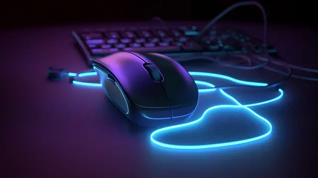

Elemento Media->text
Você já parou pra pensar como a internet conecta pessoas de diferentes lugares, histórias e interesses? Pois é, foi justamente com essa ideia que este espaço surgiu: um ponto de encontro digital feito para compartilhar conhecimento, criatividade e inspiração. Aqui, cada detalhe foi pensado com cuidado para oferecer uma experiência agradável, seja você alguém em busca de informação, aprendizado ou apenas uma boa leitura para passar o tempo.
